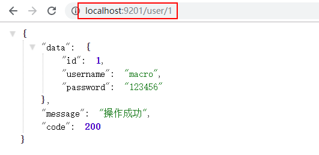
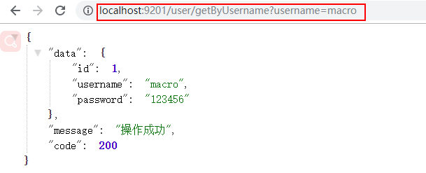
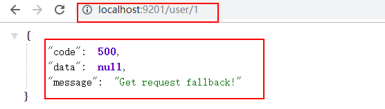
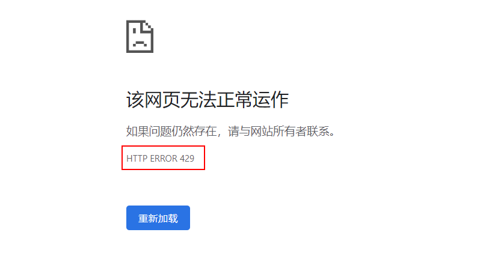

学习不走弯路，关注公众号 回复「学习路线」，获取mall项目专属学习路线！
Spring Cloud Gateway：新一代API网关服务
Spring Cloud Gateway 为 SpringBoot 应用提供了API网关支持，具有强大的智能路由与过滤器功能，本文将对其用法进行详细介绍。
Gateway 简介
Gateway是在Spring生态系统之上构建的API网关服务，基于Spring 5，Spring Boot 2和 Project Reactor等技术。Gateway旨在提供一种简单而有效的方式来对API进行路由，以及提供一些强大的过滤器功能， 例如：熔断、限流、重试等。
Spring Cloud Gateway 具有如下特性：
- 基于Spring Framework 5, Project Reactor 和 Spring Boot 2.0 进行构建；
- 动态路由：能够匹配任何请求属性；
- 可以对路由指定 Predicate（断言）和 Filter（过滤器）；
- 集成Hystrix的断路器功能；
- 集成 Spring Cloud 服务发现功能；
- 易于编写的 Predicate（断言）和 Filter（过滤器）；
- 请求限流功能；
- 支持路径重写。
相关概念
- Route（路由）：路由是构建网关的基本模块，它由ID，目标URI，一系列的断言和过滤器组成，如果断言为true则匹配该路由；
- Predicate（断言）：指的是Java 8 的 Function Predicate。 输入类型是Spring框架中的ServerWebExchange。 这使开发人员可以匹配HTTP请求中的所有内容，例如请求头或请求参数。如果请求与断言相匹配，则进行路由；
- Filter（过滤器）：指的是Spring框架中GatewayFilter的实例，使用过滤器，可以在请求被路由前后对请求进行修改。
创建 api-gateway模块
这里我们创建一个api-gateway模块来演示Gateway的常用功能。
在pom.xml中添加相关依赖
<dependency>
<groupId>org.springframework.cloud</groupId>
<artifactId>spring-cloud-starter-gateway</artifactId>
</dependency>
两种不同的配置路由方式
Gateway 提供了两种不同的方式用于配置路由，一种是通过yml文件来配置，另一种是通过Java Bean来配置，下面我们分别介绍下。
使用yml配置
- 在application.yml中进行配置：
server:
port: 9201
service-url:
user-service: http://localhost:8201
spring:
cloud:
gateway:
routes:
- id: path_route #路由的ID
uri: ${service-url.user-service}/user/{id} #匹配后路由地址
predicates: # 断言，路径相匹配的进行路由
- Path=/user/{id}
启动eureka-server，user-service和api-gateway服务，并调用该地址测试：http://localhost:9201/user/1
我们发现该请求被路由到了user-service的该路径上：http://localhost:8201/user/1

使用Java Bean配置
- 添加相关配置类，并配置一个RouteLocator对象：
/**
* Created by macro on 2019/9/24.
*/
@Configuration
public class GatewayConfig {
@Bean
public RouteLocator customRouteLocator(RouteLocatorBuilder builder) {
return builder.routes()
.route("path_route2", r -> r.path("/user/getByUsername")
.uri("http://localhost:8201/user/getByUsername"))
.build();
}
}
重新启动api-gateway服务，并调用该地址测试：http://localhost:9201/user/getByUsername?username=macro
我们发现该请求被路由到了user-service的该路径上：http://localhost:8201/user/getByUsername?username=macro

Route Predicate 的使用
Spring Cloud Gateway将路由匹配作为Spring WebFlux HandlerMapping基础架构的一部分。 Spring Cloud Gateway包括许多内置的Route Predicate工厂。 所有这些Predicate都与HTTP请求的不同属性匹配。 多个Route Predicate工厂可以进行组合，下面我们来介绍下一些常用的Route Predicate。
注意：Predicate中提到的配置都在application-predicate.yml文件中进行修改，并用该配置启动api-gateway服务。
After Route Predicate
在指定时间之后的请求会匹配该路由。
spring:
cloud:
gateway:
routes:
- id: after_route
uri: ${service-url.user-service}
predicates:
- After=2019-09-24T16:30:00+08:00[Asia/Shanghai]
Before Route Predicate
在指定时间之前的请求会匹配该路由。
spring:
cloud:
gateway:
routes:
- id: before_route
uri: ${service-url.user-service}
predicates:
- Before=2019-09-24T16:30:00+08:00[Asia/Shanghai]
Between Route Predicate
在指定时间区间内的请求会匹配该路由。
spring:
cloud:
gateway:
routes:
- id: before_route
uri: ${service-url.user-service}
predicates:
- Between=2019-09-24T16:30:00+08:00[Asia/Shanghai], 2019-09-25T16:30:00+08:00[Asia/Shanghai]
Cookie Route Predicate
带有指定Cookie的请求会匹配该路由。
spring:
cloud:
gateway:
routes:
- id: cookie_route
uri: ${service-url.user-service}
predicates:
- Cookie=username,macro
使用curl工具发送带有cookie为username=macro的请求可以匹配该路由。
curl http://localhost:9201/user/1 --cookie "username=macro"
Header Route Predicate
带有指定请求头的请求会匹配该路由。
spring:
cloud:
gateway:
routes:
- id: header_route
uri: ${service-url.user-service}
predicates:
- Header=X-Request-Id, \d+
使用curl工具发送带有请求头为X-Request-Id:123的请求可以匹配该路由。
curl http://localhost:9201/user/1 -H "X-Request-Id:123"
Host Route Predicate
带有指定Host的请求会匹配该路由。
spring:
cloud:
gateway:
routes:
- id: host_route
uri: ${service-url.user-service}
predicates:
- Host=**.macrozheng.com
使用curl工具发送带有请求头为Host:www.macrozheng.com的请求可以匹配该路由。
curl http://localhost:9201/user/1 -H "Host:www.macrozheng.com"
Method Route Predicate
发送指定方法的请求会匹配该路由。
spring:
cloud:
gateway:
routes:
- id: method_route
uri: ${service-url.user-service}
predicates:
- Method=GET
使用curl工具发送GET请求可以匹配该路由。
curl http://localhost:9201/user/1
使用curl工具发送POST请求无法匹配该路由。
curl -X POST http://localhost:9201/user/1
Path Route Predicate
发送指定路径的请求会匹配该路由。
spring:
cloud:
gateway:
routes:
- id: path_route
uri: ${service-url.user-service}/user/{id}
predicates:
- Path=/user/{id}
使用curl工具发送/user/1路径请求可以匹配该路由。
curl http://localhost:9201/user/1
使用curl工具发送/abc/1路径请求无法匹配该路由。
curl http://localhost:9201/abc/1
Query Route Predicate
带指定查询参数的请求可以匹配该路由。
spring:
cloud:
gateway:
routes:
- id: query_route
uri: ${service-url.user-service}/user/getByUsername
predicates:
- Query=username
使用curl工具发送带username=macro查询参数的请求可以匹配该路由。
curl http://localhost:9201/user/getByUsername?username=macro
使用curl工具发送带不带查询参数的请求无法匹配该路由。
curl http://localhost:9201/user/getByUsername
RemoteAddr Route Predicate
从指定远程地址发起的请求可以匹配该路由。
spring:
cloud:
gateway:
routes:
- id: remoteaddr_route
uri: ${service-url.user-service}
predicates:
- RemoteAddr=192.168.1.1/24
使用curl工具从192.168.1.1发起请求可以匹配该路由。
curl http://localhost:9201/user/1
Weight Route Predicate
使用权重来路由相应请求，以下表示有80%的请求会被路由到localhost:8201，20%会被路由到localhost:8202。
spring:
cloud:
gateway:
routes:
- id: weight_high
uri: http://localhost:8201
predicates:
- Weight=group1, 8
- id: weight_low
uri: http://localhost:8202
predicates:
- Weight=group1, 2
Route Filter 的使用
路由过滤器可用于修改进入的HTTP请求和返回的HTTP响应，路由过滤器只能指定路由进行使用。Spring Cloud Gateway 内置了多种路由过滤器，他们都由GatewayFilter的工厂类来产生，下面我们介绍下常用路由过滤器的用法。
AddRequestParameter GatewayFilter
给请求添加参数的过滤器。
spring:
cloud:
gateway:
routes:
- id: add_request_parameter_route
uri: http://localhost:8201
filters:
- AddRequestParameter=username, macro
predicates:
- Method=GET
以上配置会对GET请求添加username=macro的请求参数，通过curl工具使用以下命令进行测试。
curl http://localhost:9201/user/getByUsername
相当于发起该请求：
curl http://localhost:8201/user/getByUsername?username=macro
StripPrefix GatewayFilter
对指定数量的路径前缀进行去除的过滤器。
spring:
cloud:
gateway:
routes:
- id: strip_prefix_route
uri: http://localhost:8201
predicates:
- Path=/user-service/**
filters:
- StripPrefix=2
以上配置会把以/user-service/开头的请求的路径去除两位，通过curl工具使用以下命令进行测试。
curl http://localhost:9201/user-service/a/user/1
相当于发起该请求：
curl http://localhost:8201/user/1
PrefixPath GatewayFilter
与StripPrefix过滤器恰好相反，会对原有路径进行增加操作的过滤器。
spring:
cloud:
gateway:
routes:
- id: prefix_path_route
uri: http://localhost:8201
predicates:
- Method=GET
filters:
- PrefixPath=/user
以上配置会对所有GET请求添加/user路径前缀，通过curl工具使用以下命令进行测试。
curl http://localhost:9201/1
相当于发起该请求：
curl http://localhost:8201/user/1
Hystrix GatewayFilter
Hystrix 过滤器允许你将断路器功能添加到网关路由中，使你的服务免受级联故障的影响，并提供服务降级处理。
- 要开启断路器功能，我们需要在pom.xml中添加Hystrix的相关依赖：
<dependency>
<groupId>org.springframework.cloud</groupId>
<artifactId>spring-cloud-starter-netflix-hystrix</artifactId>
</dependency>
- 然后添加相关服务降级的处理类：
/**
* Created by macro on 2019/9/25.
*/
@RestController
public class FallbackController {
@GetMapping("/fallback")
public Object fallback() {
Map<String,Object> result = new HashMap<>();
result.put("data",null);
result.put("message","Get request fallback!");
result.put("code",500);
return result;
}
}
- 在application-filter.yml中添加相关配置，当路由出错时会转发到服务降级处理的控制器上：
spring:
cloud:
gateway:
routes:
- id: hystrix_route
uri: http://localhost:8201
predicates:
- Method=GET
filters:
- name: Hystrix
args:
name: fallbackcmd
fallbackUri: forward:/fallback
- 关闭user-service，调用该地址进行测试：http://localhost:9201/user/1 ，发现已经返回了服务降级的处理信息。

RequestRateLimiter GatewayFilter
RequestRateLimiter 过滤器可以用于限流，使用RateLimiter实现来确定是否允许当前请求继续进行，如果请求太大默认会返回HTTP 429-太多请求状态。
- 在pom.xml中添加相关依赖：
<dependency>
<groupId>org.springframework.boot</groupId>
<artifactId>spring-boot-starter-data-redis-reactive</artifactId>
</dependency>
- 添加限流策略的配置类，这里有两种策略一种是根据请求参数中的username进行限流，另一种是根据访问IP进行限流；
/**
* Created by macro on 2019/9/25.
*/
@Configuration
public class RedisRateLimiterConfig {
@Bean
KeyResolver userKeyResolver() {
return exchange -> Mono.just(exchange.getRequest().getQueryParams().getFirst("username"));
}
@Bean
public KeyResolver ipKeyResolver() {
return exchange -> Mono.just(exchange.getRequest().getRemoteAddress().getHostName());
}
}
- 我们使用Redis来进行限流，所以需要添加Redis和RequestRateLimiter的配置，这里对所有的GET请求都进行了按IP来限流的操作；
server:
port: 9201
spring:
redis:
host: localhost
password: 123456
port: 6379
cloud:
gateway:
routes:
- id: requestratelimiter_route
uri: http://localhost:8201
filters:
- name: RequestRateLimiter
args:
redis-rate-limiter.replenishRate: 1 #每秒允许处理的请求数量
redis-rate-limiter.burstCapacity: 2 #每秒最大处理的请求数量
key-resolver: "#{@ipKeyResolver}" #限流策略，对应策略的Bean
predicates:
- Method=GET
logging:
level:
org.springframework.cloud.gateway: debug
- 多次请求该地址：http://localhost:9201/user/1 ，会返回状态码为429的错误；

Retry GatewayFilter
对路由请求进行重试的过滤器，可以根据路由请求返回的HTTP状态码来确定是否进行重试。
- 修改配置文件：
spring:
cloud:
gateway:
routes:
- id: retry_route
uri: http://localhost:8201
predicates:
- Method=GET
filters:
- name: Retry
args:
retries: 1 #需要进行重试的次数
statuses: BAD_GATEWAY #返回哪个状态码需要进行重试，返回状态码为5XX进行重试
backoff:
firstBackoff: 10ms
maxBackoff: 50ms
factor: 2
basedOnPreviousValue: false
当调用返回500时会进行重试，访问测试地址：http://localhost:9201/user/111
可以发现user-service控制台报错2次，说明进行了一次重试。
2019-10-27 14:08:53.435 ERROR 2280 --- [nio-8201-exec-2] o.a.c.c.C.[.[.[/].[dispatcherServlet] : Servlet.service() for servlet [dispatcherServlet] in context with path [] threw exception [Request processing failed; nested exception is java.lang.NullPointerException] with root cause
java.lang.NullPointerException: null
at com.macro.cloud.controller.UserController.getUser(UserController.java:34) ~[classes/:na]
结合注册中心使用
我们上次讲到使用Zuul作为网关结合注册中心进行使用时，默认情况下Zuul会根据注册中心注册的服务列表，以服务名为路径创建动态路由，Gateway同样也实现了该功能。下面我们演示下Gateway结合注册中心如何使用默认的动态路由和过滤器。
使用动态路由
- 在pom.xml中添加相关依赖：
<dependency>
<groupId>org.springframework.cloud</groupId>
<artifactId>spring-cloud-starter-netflix-eureka-client</artifactId>
</dependency>
- 添加application-eureka.yml配置文件：
server:
port: 9201
spring:
application:
name: api-gateway
cloud:
gateway:
discovery:
locator:
enabled: true #开启从注册中心动态创建路由的功能
lower-case-service-id: true #使用小写服务名，默认是大写
eureka:
client:
service-url:
defaultZone: http://localhost:8001/eureka/
logging:
level:
org.springframework.cloud.gateway: debug
- 使用application-eureka.yml配置文件启动api-gateway服务，访问http://localhost:9201/user-service/user/1 ，可以路由到user-service的http://localhost:8201/user/1 处。
使用过滤器
在结合注册中心使用过滤器的时候，我们需要注意的是uri的协议为
lb，这样才能启用Gateway的负载均衡功能。
- 修改application-eureka.yml文件，使用了PrefixPath过滤器，会为所有GET请求路径添加
/user路径并路由；
server:
port: 9201
spring:
application:
name: api-gateway
cloud:
gateway:
routes:
- id: prefixpath_route
uri: lb://user-service #此处需要使用lb协议
predicates:
- Method=GET
filters:
- PrefixPath=/user
discovery:
locator:
enabled: true
eureka:
client:
service-url:
defaultZone: http://localhost:8001/eureka/
logging:
level:
org.springframework.cloud.gateway: debug
- 使用application-eureka.yml配置文件启动api-gateway服务，访问http://localhost:9201/1 ，可以路由到user-service的http://localhost:8201/user/1 处。
使用到的模块
springcloud-learning
├── eureka-server -- eureka注册中心
├── user-service -- 提供User对象CRUD接口的服务
└── api-gateway -- gateway作为网关的测试服务
项目源码地址
https://github.com/macrozheng/springcloud-learning
公众号